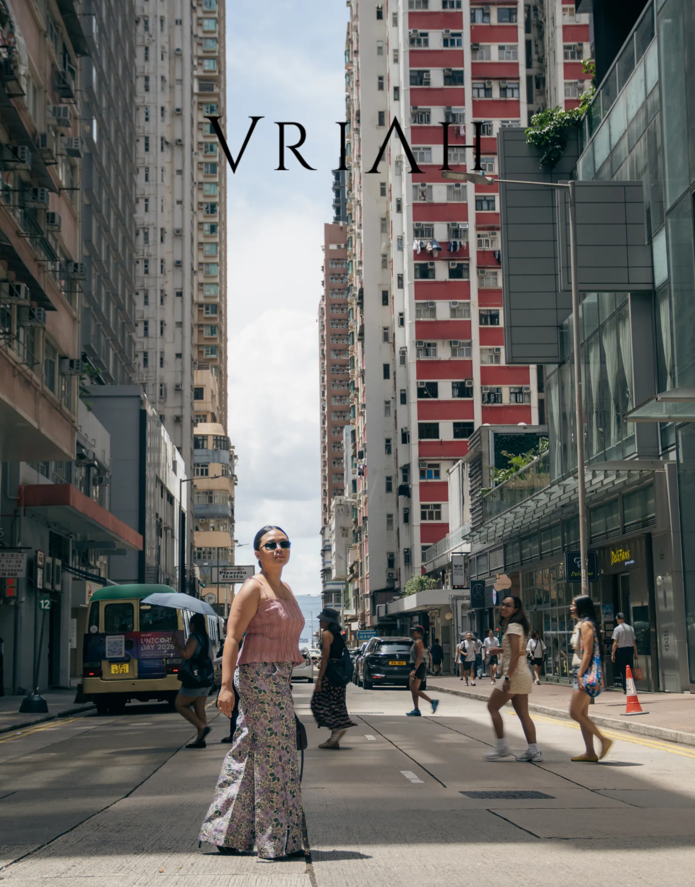
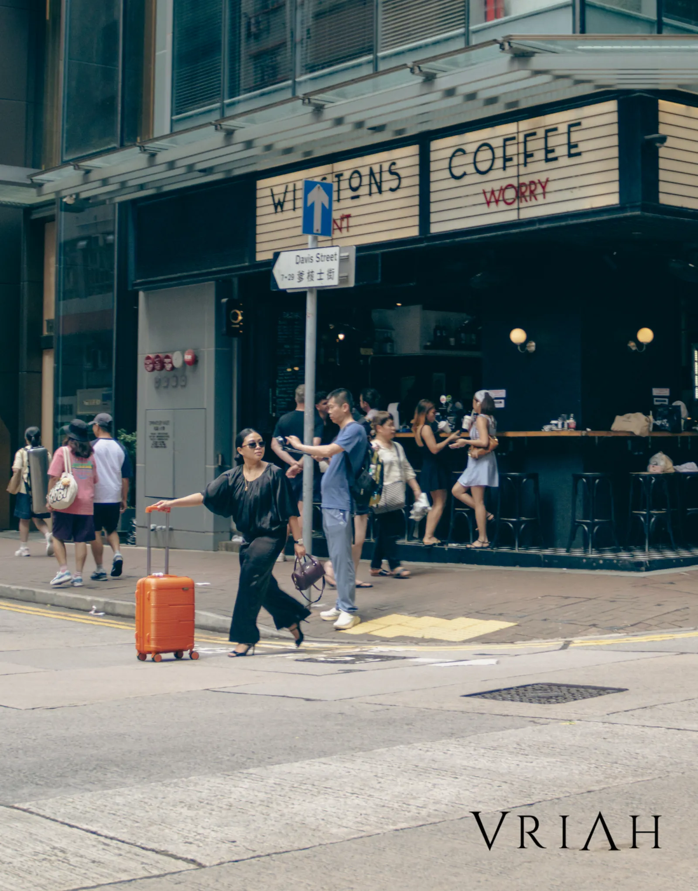
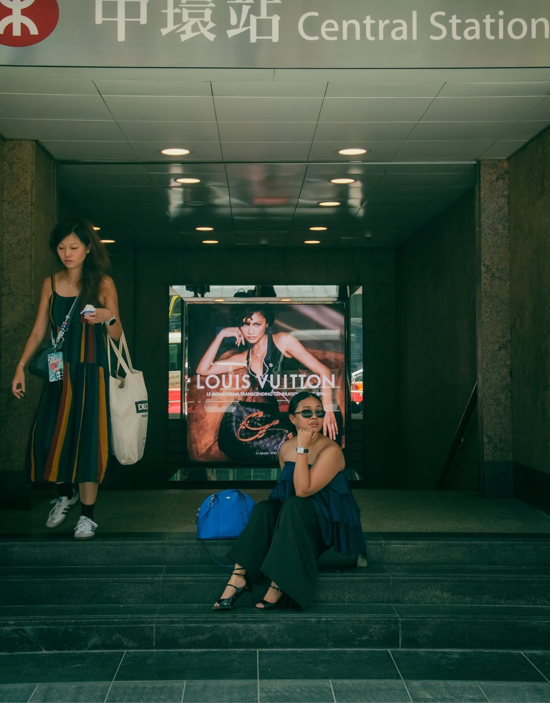
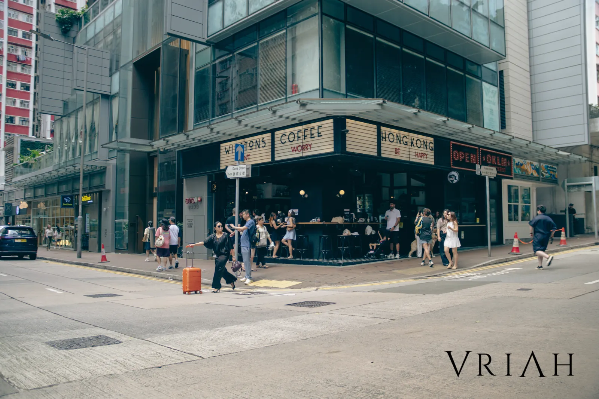
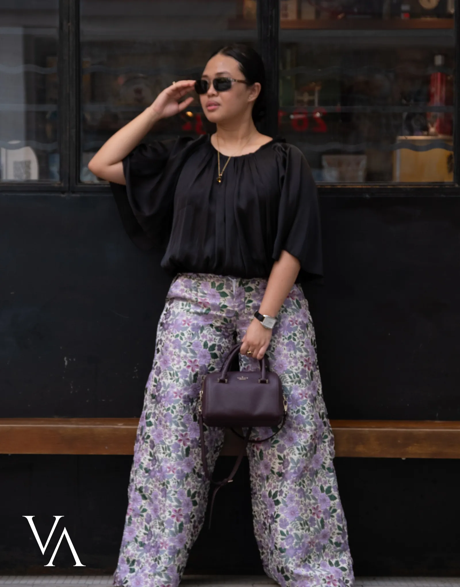
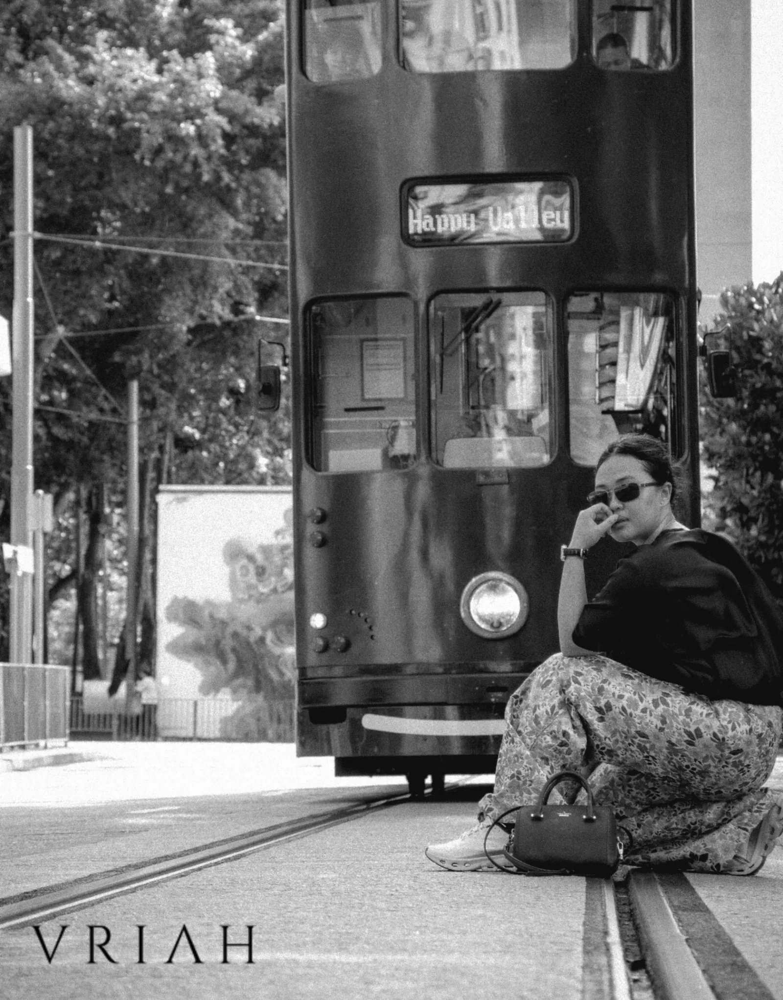
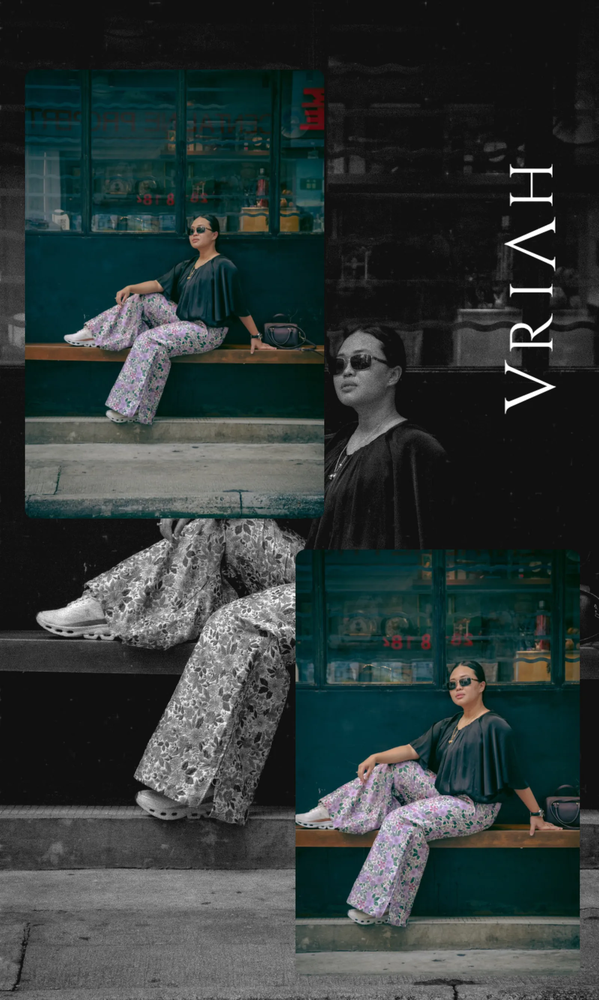
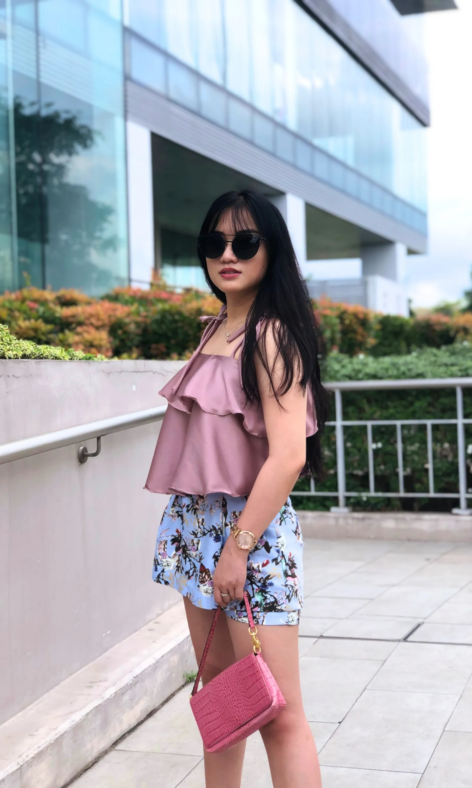
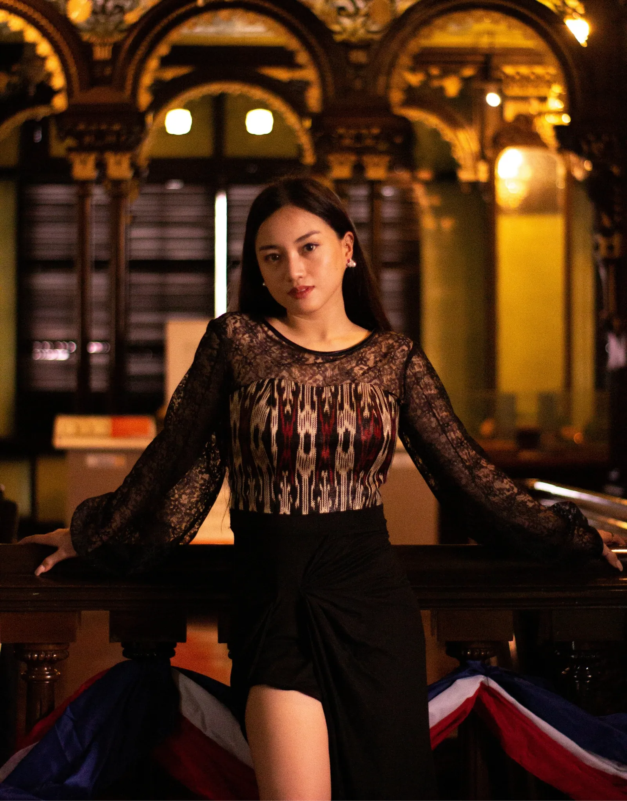

A Day, Considered
The
Collection
Every frame, arranged by the mood of the day it belongs to. Select a photograph to see it in full.
Morning
The city before it fills. Soft colour, open streets, the day still undecided.
03 frames


In Transit
Crossings, signals, a suitcase in tow. Clothes that keep their composure in motion.
09 frames






A Pause
A shopfront, a ledge, a passing tram. The quiet minutes where style is most personal.
08 frames







Soft Light
Satin, florals and water-bright afternoons. Everything a little lighter, a little slower.
07 frames


Evening
Lamplight, old wood, woven detail. The day closes with a little more presence.
04 frames
